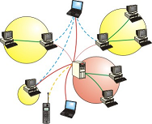
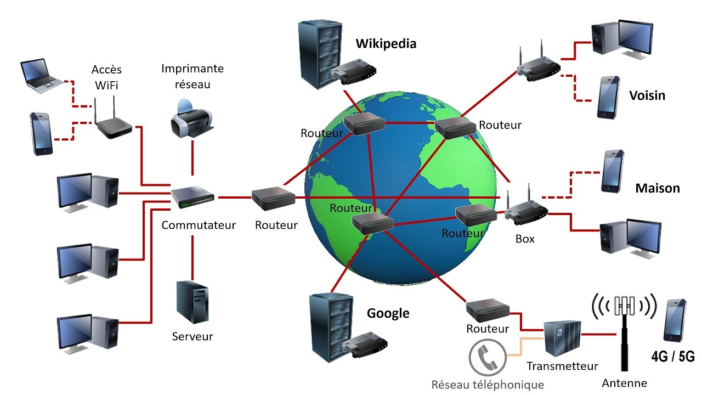
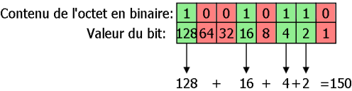
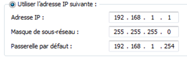
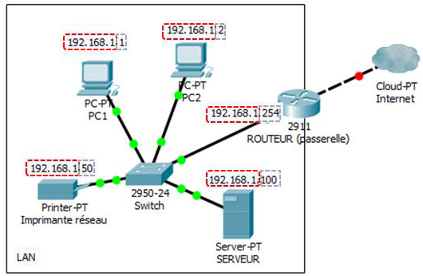
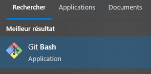

Internet : des réseaux et des protocoles

Comment relier des machines entre-elles ?
Internet : un réseau de réseaux
Que se passe-t-il lorsque vous tapez dans la barre d'adresse de votre navigateur http://www.wikipedia.fr ?
Votre ordinateur va chercher à entrer en communication avec un autre ordinateur se trouvant probablement à des milliers de kilomètres de chez vous. Pour pouvoir établir cette communication, il faut bien sûr que les deux ordinateurs soient « reliés ». On dira que nos deux ordinateurs sont en réseau.
Il existe énormément de réseaux (la plupart des ordinateurs du lycée sont en « réseau »), certains réseaux sont reliés à d'autres réseaux qui sont eux-mêmes reliés à d'autres réseaux... ce qui forme « un réseaux de réseaux ». Savez-vous comment on appelle cet assemblage multiple de réseaux ? Internet !

Internet est constitué de machines connectées par des câbles, ou parfois par ondes électromagnétiques (ex : WIFI) : c'est un réseau de réseaux.
Comment les données traversent les océans ?
Un réseau de câbles sous-marins
[image non reprise dans cette copie]
L’immense majorité des données transférées dans le monde passe par des câbles sous-marins : environ 97 %
Visiter le site web submarinecablemap.com pour répondre aux questions suivantes :
Admettons que vous êtes en vacances en Irlande (sait-on jamais !). Vous discutez de vos vacances, via l'application Signal, avec vos cousins qui sont eux en vacances en Islande (Soyons fous !).
1. A votre avis, par quel câble sous-marin passent les données ? Justifier votre réponse avec le nom du câble.
Ecrire votre réponse à la place de cette phrase !
ça se passe comment sur terre ?
Ce site ne permet de visualiser QUE les câbles sous-marins, mais il faut bien entendu comprendre qu'il existe tout autant de câbles terrestres, non visualisés sur ce site.
2. Un chalutier coupe accidentellement le câble que vous avez désigné à la question précédente. Par où pourra maintenant passer l’information ? Justifier en donnant des noms de pays ou de câble.
Ecrire votre réponse à la place de cette phrase !
3. Comment Internet garantit-il que l’information puisse toujours être transmise, même en cas de coupure d'une laison câblée ?
Ecrire votre réponse à la place de cette phrase !
Comment identifier une machine sur un réseau ?
L'adresse IP
L’adresse IP est une adresse unique attribuée à chaque machine sur un réseau. Tout comme une adresse postale, il faut connaître au préalable l'adresse IP de l'ordinateur avec lequel on veut communiquer.
L'adresse IP, en version IPv4, se présente sous forme de 4 octets séparés par des points. Par exemple : 204.35.129.3
On rappelle qu'un octet est composé de 8 bits (d'où son nom). Ci-dessous, un rappel de conversion d'un nombre binaire codé sur un octet (10010110) vers sa valeur décimale (150) :

Répondre aux questions suivantes :
1. Sachant qu’un bit ne peut prendre que deux valeurs (0 et 1), combien de valeurs différentes peut prendre un octet ?
Ecrire votre réponse à la place de cette phrase !
2. A combien de machines différentes peut-on donner un numéro différent sur Internet sachant qu'une adresse IPv4 utilise 4 octets ?
Ecrire votre réponse à la place de cette phrase !
3. Sachant qu’il y a environ 8 milliards de personnes et plus de 150 milliards d’objets connectés dans le monde, peut-on considérer qu’il y a suffisamment d’adresses IPv4 pour nommer autant de machines ?
Ecrire votre réponse à la place de cette phrase !
Comment numéroter toutes les machines du monde en IPv4 ?
Les adresses IP privées et publiques
Définitions
- Adresse IP publique : adresse numérique désignant une machine sur internet.
- Adresse IP privée : adresse numérique désignant une machine sur un réseau local. Chez nous, elles commencent souvent par 192.168.1.X
- Routeur : machine qui permet de transmettre des informations d’un réseau à un autre réseau.
Sachant que, sans routeur, un ordinateur ne peut communiquer qu'avec les machines de son propre réseau, on peut économiser énormément d'adresses IP publiques à l'aide des adresses privées :
- Dans chacun de nos réseaux locaux (à la maison, au lycée,...), on doit avoir des adresses IP privées différentes pour chaque machine du réseau mais... rien n'empêche d'avoir les mêmes adresses d'un réseau local à l'autre !
- On peut donc utiliser les mêmes adresses dans tous les réseaux locaux du monde.
- Par contre, il faut absolument conserver des adresses IP publiques toutes différentes sur Internet.
Le protocole IPv6
A terme, le vieillissant protocole IPv4 sera remplacé par l'IPv6, capable de nommer plus de 1038 machines différentes !
Il ne sera plus nécessaire de différencier les adresses publiques et privées lorsque tous les réseaux d'Internet seront compatibles avec ce nouveau protocle.
Comment savoir sur quel réseau une machine est connectée ?
Les masques de sous-réseau
Le masque de sous-réseau permet de savoir si plusieurs machines appartiennent au même réseau. Dans l’exemple ci-dessous, le masque de sous-réseau 255.255.255.0 indique que seul le dernier octet de l’adresse IP permet d’identifier une machine sur le réseau 192.168.1.0.

Les machines du réseau local seront donc de la forme 192.168.1.X. Et donc, on pourra ainsi former 254 adresses locales différentes, donc connecter 254 appareils distincts dans le réseau. Dans l'exemple ci-dessus, 192.168.1.1 est une adresse IP de réseau local.

Une adresse IP pour le routeur
Dans le réseau schématisé ci-dessus, on peut voir un routeur, permettant de communiquer d'un réseau (local) à un autre (Internet).
Remarques :
- Chez nous, on appelle le routeur une box, c'est le boitier fourni par notre FAI (Orange, Free, SFR ou Bouygues).
- Le dernier octet de l'adresse IP du routeur est souvent 254, par tradition et pour mieux le trouver.
Ci dessous, un tableau regroupant différentes machines sur un même réseau :
| Machine | IP d'une machine | Masque de sous-réseau | Nom du réseau |
|---|---|---|---|
| Ordinateur fixe | 192.168.1.1 | 255.255.255.0 | 192.168.1.0 |
| Ordinateur portable | 192.168.1.2 | 255.255.255.0 | 192.168.1.0 |
| Téléphone 1 | 192.168.1.45 | 255.255.255.0 | 192.168.1.0 |
| Téléphone 2 | 192.168.1.167 | 255.255.255.0 | 192.168.1.0 |
| Console de jeu | 192.168.1.224 | 255.255.255.0 | 192.168.1.0 |
| Routeur (Box) | 192.168.1.254 | 255.255.255.0 | 192.168.1.0 |
255 ou 0 ?
- Lorsqu'un octet du masque est égal à 255, cela siginifie que cet octet désigne le nom du réseau.
- Lorsqu'un octet du masque est égal à 0, cela siginifie que cet octet désigne le nom d'une machine sur le réseau.
Répondre aux questions suivantes :
1. Donner un nom (une adresse IP) pour une nouvelle machine du réseau ci-dessus (Réseau 192.168.1.0, avec un masque de 255.255.255.0).
Ecrire votre réponse à la place de cette phrase !
2. Donner un nom (une adresse IP) pour deux machines d'un autre réseau, ayant pour nom 192.168.50.0 et pour masque 255.255.255.0
Ecrire votre réponse à la place de cette phrase !
3. Sur un réseau ayant pour masque de sous-réseau 255.255.255.0, les machines ayant pour adresses 192.168.7.54 et 192.168.7.24 peuvent-elle communiquer ensemble ?
Ecrire votre réponse à la place de cette phrase !
4. Sur un réseau ayant pour masque de sous-réseau 255.255.0.0, les machines ayant pour adresses 192.168.3.54 et 192.168.1.24 peuvent-elle communiquer ensemble ?
Ecrire votre réponse à la place de cette phrase !
Comment savoir si des machines peuvent communiquer entre-elles ?
Ping, tracert et autres commandes...
Pour tester la connexion vers une machine, on peut utiliser...
...un terminal de ligne de commande¶
Au lycée, on peut utiliser Git Bash par exemple (à rechercher dans le menu démarrer).

Pour tester la connexion vers un site web, on utilise la commange ping. Par exemple, pour tester la connexion vers e-lyco, on doit saisir dans Git Bash : ping e-lyco.fr :
[image non reprise dans cette copie]
...des outils en ligne¶
Sur le site web ping.eu, on peut tester plusieurs commandes en ligne, en saisissant l'URL du site à tester après avoir sélectionnée la commande voulue.
Tester les commandes ping, tracert et whois sur le site web ping.eu.
Répondre aux questions suivantes :
1. Que permet de savoir la commande ping ?.
Ecrire votre réponse à la place de cette phrase !
2. Que permet de savoir la commande tracert ?.
Ecrire votre réponse à la place de cette phrase !
3. Que permet de savoir la commande whois (note : ajouter l'option "Full info") ?.
Ecrire votre réponse à la place de cette phrase !